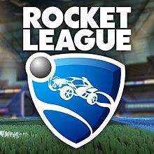

Rocket League
Rocket League
| Table of Contents: |
- Gameplay
- Gamemodes
- Platform Support
- Customization
- Quiz
|
Gameplay
Rocket League is a video game that involves the combination of car racing and soccer, created and developed by Psyonix Studios. In the game, two teams of players are pitted against each other in a futuristic arena to duke it out in five-minute matches. Rocket League is the sequel to Supersonic Acrobatic Rocket-Powered Battle-Cars (known as SARPBC), which was created by the same developer.
Rocket League's gameplay is largely the same as that of its predecessor, Supersonic Acrobatic Rocket-Powered Battle-Cars. Players control a rocket-powered car and use it to hit a ball that is much larger than the cars towards the other team's goal area to score goals, in a way that resembles indoor soccer, with elements reminiscent of a demolition derby. Players' cars have the ability to jump to hit the ball while in mid-air. The players can also pick up a speed boost by passing their cars over marked spaces on the field, enabling them to quickly cross the field, use the added momentum to hit the ball, or ram into another player's car to destroy it; in the latter case, the destroyed car respawns moments later on their team's side of the field. A player may also use a boost when in the air to propel themselves forward in flight, allowing players to hit the ball in the air. Players can alter their car's orientation while midair, which combined with midair boosting allows for controlled flight. Players can also perform quick dodges, causing their car to do a short jump and spin in a given direction, which can be used to nudge the ball or gain positioning advantage over the other team.
Gamemodes
Rocket League is not only limited to soccer, here are some other gamemodes avaialbale in Rocket League:
- Dropshot
- Hoops
- Rumble
- Snow Day
Platform Support
Rocket League is available to play on the following platforms:
- Playstation
- Steam
- Xbox
- Nintendo
- Epic Games
Rocket League Cars
Vehicle bodies, also known as Battle-Cars, are the most basic and important method of player customization. Cars can be customized with all sorts of decals, colors, toppers, flags, etc. One of the most critical parts of the Rocket League experience is collecting items and car bodies and designing your own, custom Battle-Car to bring into matches! There are currently over 75 different car bodies to choose from, and over an infinite number of unique car designs you can make with our large catalog of cosmetics
Popular Vehicle Bodies
| Name |
Features |
Picture |
| Octane |
- Most popular car in Rocket League
- Part of initial launch
- Considered to have an accurate design to hitbox
|
 |
| Dominus |
- One of the most popular freestyle cars
- Part of first DLC
- Very populat among freestylers
|
 |
| Batmobile |
- Flattest/Longest car in Rocket League
- Part of first brand DLC
- Came with the exclusive Batman Goal Explosion
|
 |
| Merc |
- One of the largest/bulkiest cars in Rocket League
- Part of initial launch
- Not popular, although a fan favorite for its awkward look
|
 |
| Takumi |
- Once one of the most popular cars, since declined in use
- Part of first DLC
- Kinda looks like a hotwheels car
|
 |
Quiz
Now that you have learned a little more about Rocket League, try using the link below to take our Rocket League Quiz/Questionnaire! Or Return to Top to study up before testing youre skills.
Quiz
Return to top of page